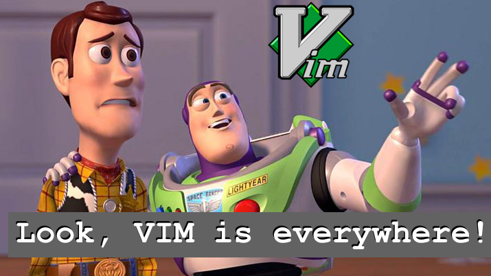

15/07/2022
@bubble-go.mg
Presented by
## <h1>...2022...</h1> A world of <span style="color:blue; font-style:bold;">graphical UI</span>... --- ## ... where tyrants named <span style="color:red">**IDE**</span> ...rules above all ... --- ## üí™ ... two old geezer **REFUSED TO GIVE UP** the battle They continue to resist **FOR AGES**. --- ## üî• They **HAD THE POWER** to do so because ... ...they were NOT quite your **"Average Text Editor"** --- ### ... They called themselves <span style="margin-top: 500px; color:green;">**PDE**</span> or "Personal Development Environment" as opposed to <span style="margin-top: 500px; color:red;">**IDE**</span>, Integrated Development Environment. --- ## One of them is named Escape Meta Alt Control Shift or EMACS #whoCaresAnyway --- ## And the other one is ...
## VIM in 2022? <h2 style="color: red;" >ü§¨Seriously!?</h2> <h1>WHY!?</h1> --- ## Linux?  --- ## ERGONOMY * <span style="color:green;">VIM is fast! </span>Even if you are slow * VIM don't interrupt your thought process... by ditching the mouse * When you are in the Terminal, you can stay in the Terminal. --- ## MAGIC & SUPERPOWER * <span style="color:green;">GOD-MODE</span> is just one `<esc>` away! (On normal mode, all keys suddenly become a very unique and meaningful command) --- ## PERSONAL DEVELOPMENT ENVIRONMENT <span style="font-style: Italic">“Let the weapon be an extension of oneself”</span>
## <h2 style="color: white;" >Emacs</h2> & <h1 style="color: #ffdbcc;" >IDE</h1> <h2>?</h2> --- ## Either EMACS or most of recent IDEs nowaday ... have a VIM module or plugin. That is to say: <span style="margin-top: 500px; color:green;">**VIM is THAT AWESOME!!**<br>ü§ü</span>
## <h2 style="color: #e2f0cb;" >>THE BASICS</h2> üî† --- ## üöÄMOTIONS & SIMPLE COMMANDS * <span style="color:green;">**Row & line:**</span> h, j, k, l * <span style="color:green;">**Word:**</span> w, e, b * <span style="color:green;">**Paragraph:**</span> {, }, (, ) * <span style="color:#ffdbcc;">**Delete/cut line:**</span> `dd` * <span style="color:#ffdbcc;">**Copy or Yank line:**</span> `yy` * <span style="color:#ffdbcc;">**Paste:**</span> `p` * <span style="color:#ffdbcc;">**Repeat last command:**</span> `.` --- ## ü¶∏‚Äç‚ôÇÔ∏è(Beginer) SUPERPOWER * <span style="color:green;">**Finding fast:**</span> `*` --- ## üöíPANIC COMMANDS (for VIMophobes) * <span style="color:red;">**Force quit:**</span> `ZQ or <esc>:q!` * <span style="color:green;">**Save and quit:**</span> `ZZ or <esc>:wq!` * <span style="color:blue;">**Undo:**</span> `u` * <span style="color:blue;">**Redo:**</span> `<ctrl>+r`
## <h2 style="color: #e2f0cb;" >> EXPRESS YOURSELF</h2> --- ## üéπKEY CHORDS * <span style="color:#ffdbcc;">**Delete inside tags/paragraphs/quotes...:**</span> `di[t{"]` * <span style="color:#ffdbcc;">**Delete n-words:**</span> `d[n]w` --- ## ü¶∏‚Äç‚ôÇÔ∏è(Intermediate) SUPERPOWER * <span style="color:green;">**Back in time:**</span> `<esc>:earlier 5m`
## <h2 style="color: #dfccf1;" >> MACRO</h2> --- * <span style="color:#55cbcd;">**qj**</span> Start a macro and assign to the key 'j' * <span style="color:#55cbcd;">**@j**</span> Invoke the macro assigned to 'j'
## <h2 style="color: green;" >> üéÅBONUS</h2> --- <span style="color:#55cbcd;">**:h [key]**</span> get help on a specific key <br> `#RTFM`
## <h2 style="color: #e2f0cb;" >üôèTHANK <span style="color:green">YOU!</span></h2>